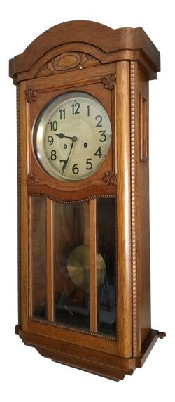

Reloj de Péndulo
Fueron inventados en 1656 por Christiaan Huygens y durante siglos fueron los relojes más precisos, especialmente en la Revolución Industrial, ayudando a organizar la vida diaria y el trabajo.
Debían mantenerse completamente fijos, ya que cualquier movimiento afectaba su precisión. Hoy en día han sido reemplazados por relojes de cuarzo y se valoran principalmente como piezas decorativas o antigüedades.